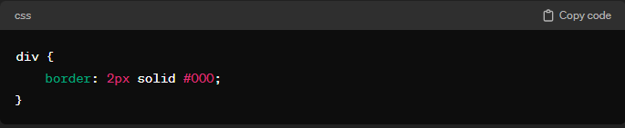
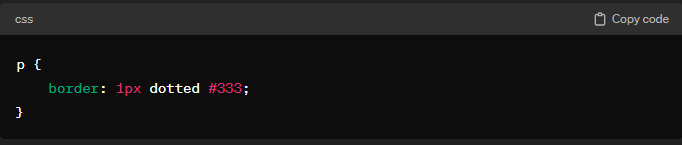
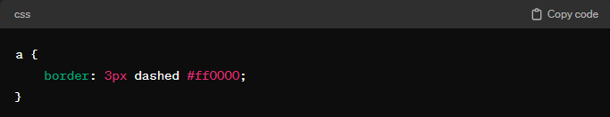
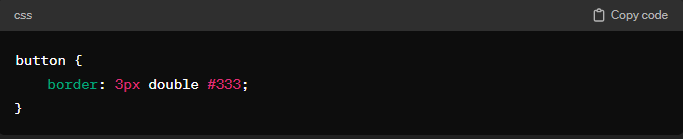
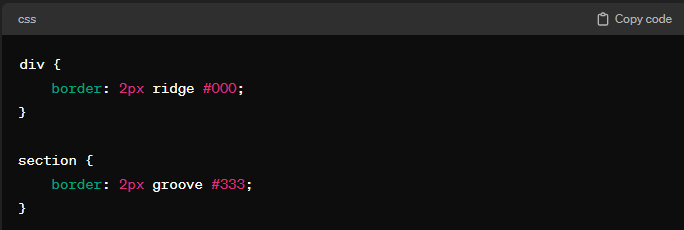
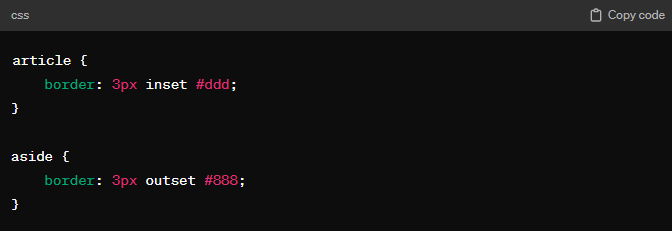
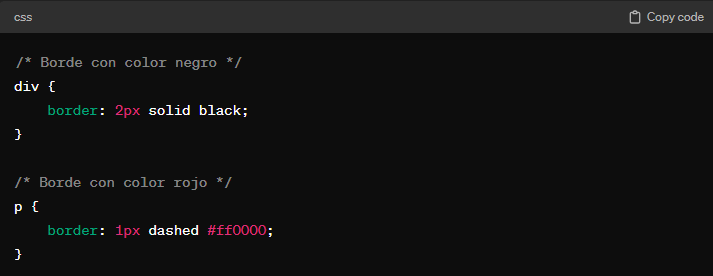
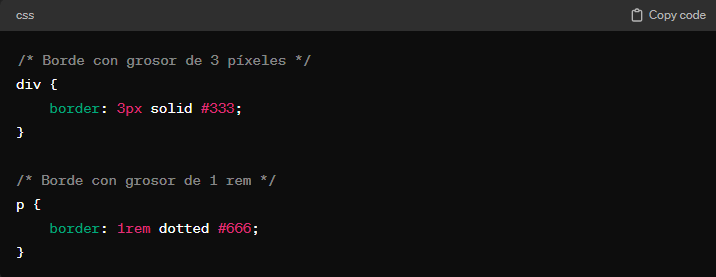
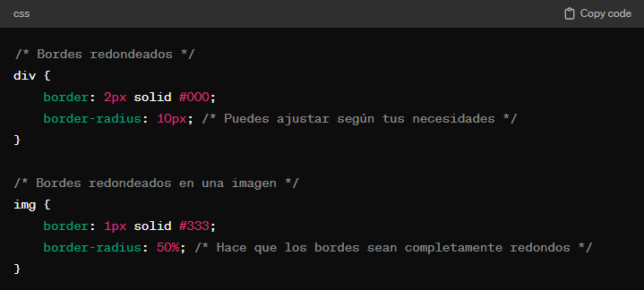

En CSS, los bordes son líneas que rodean los elementos HTML para definir su límite visual. Los bordes pueden tener diferentes estilos, colores y grosor.
Tipos de Bordes
Borde Sólido (solid):
Se trata de una línea continua.
Puedes especificar el grosor y el color.

Ejemplo Borde Sólido (solid).
Borde Punteado (dotted):
Se compone de una serie de puntos.
Es útil para crear bordes más discretos.

Ejemplo Borde Punteado (dotted).
Borde Segmentado (dashed):
Similar al punteado, pero con líneas cortas.
Proporciona un aspecto más interrumpido.

Ejemplo Borde Segmentado (dashed).
Borde Doble (double):
Consiste en dos líneas paralelas.
Puedes especificar el grosor y el color para ambas líneas.

Ejemplo Borde Doble (double).
Borde en Relieve (ridge) y Bajo Relieve (groove):
Ridge: Crea un borde que parece sobresalir de la página.
Groove: Crea un borde que parece estar tallado en la página.

Ejemplo Borde en Relieve (ridge) y Bajo Relieve (groove).
Borde Inset (inset) y Outset (outset):
Inset: Similar a groove, pero con un efecto más sutil.
Outset: Similar a ridge, pero con un efecto más sutil.

Ejemplo Borde Inset (inset) y Outset (outset).
Colores de Borde
Puedes especificar el color del borde usando nombres de color, valores RGB, valores HEX o cualquier otro método válido para especificar colores en CSS.

Ejemplo de color en bordes.
Grosor de Borde
El grosor del borde se define utilizando la propiedad border-width y puede ser en píxeles, em, rem, etc.

Ejemplo de grosor en bordes.
Bordes Redondeados
Puedes hacer que los bordes tengan esquinas redondeadas utilizando la propiedad border-radius.

Ejemplo de redondeado en bordes 1.
También puedes especificar radios de esquina diferentes para cada esquina si lo deseas.